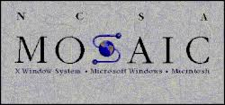

O primeiro site da história foi criado em 1991 por Tim Berners-Lee. Esse site foi desenvolvido para explicar como funcionava a World Wide Web e ensinar outras pessoas a criarem seus próprios sites.
Ele também apresentava informações sobre a nova tecnologia e como os pesquisadores poderiam compartilhar documentos utilizando links entre páginas.

O primeiro navegador da internet também foi criado por Tim Berners-Lee. Ele se chamava WorldWideWeb e foi desenvolvido para permitir que os usuários acessassem e visualizassem páginas criadas com HTML.
Posteriormente o navegador foi renomeado para Nexus. Ele foi essencial para demonstrar como a navegação na Web poderia funcionar.